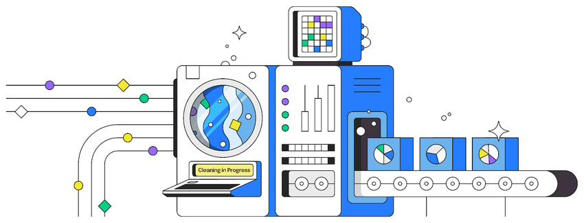
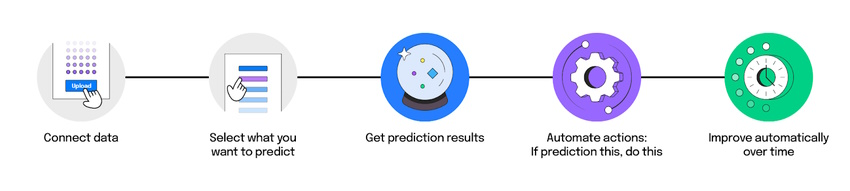
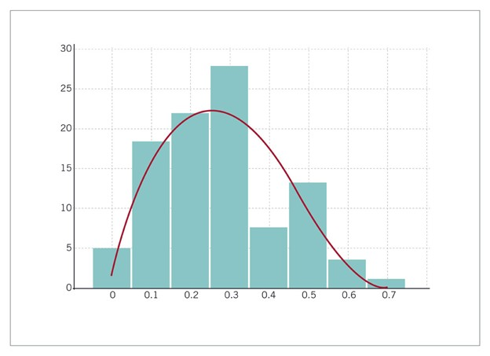
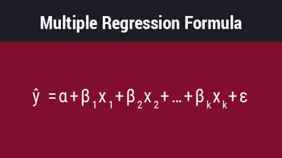

Home
Home About
About Service
Service Portfolio
Portfolio Testimonials
Testimonials Blog
Blog Contact
Contact


“Halina has always had outstanding analytical skills and impressive adaptability and efficiency. Her work was critical to important results. Therefore, I highly recommend her for any work related to data analysis or project management.”
Data enrichment, data preparation, data cleaning, data scrubbing—these are all different names for the same thing: the process of fixing or removing incorrect, corrupt, or weirdly formatted data within a dataset.
Data cleaning is the process of preparing data for analysis by removing or modifying data that is incorrect, incomplete, irrelevant, duplicated, or improperly formatted.
But, as we mentioned above, it isn’t as simple as organizing some rows or erasing information to make space for new data.

Data cleaning is a lot of muscle work. There’s a reason data cleaning is the most important step if you want to create a data-culture, let alone make airtight predictions. It involves:
Streets empty that are usually busy are remarkable and can evoke the sense of historical pictures from before the invention of the motorcar. Other things that are different at the moment will be queues to get into stores and the lines marked out on the floor to show how far apart we should be.
- Fixing spelling and syntax errors
- Standardizing data sets
- Correcting mistakes such as empty fields
- Identifying duplicate data points
It’s said that the majority of a data scientist's time is spent on cleaning, rather than machine learning. In fact, 45% of data scientist's time is spent on preparing data. And to us, that makes sense—if there’s data that doesn’t belong in your dataset, you aren’t going to get accurate results.
And with so much data these days, usually combined from multiple sources, and so many critical business decisions to make, you want to be extra sure that your data is clean.
Businesses have a plethora of data. But not all of it is accurate or organized. When it comes to machine learning, if data is not cleaned thoroughly, the accuracy of your model stands on shaky grounds. We've talked about how no-code simplifies the traditional machine learning process. What is typically a 10-step process instantly becomes a much simpler route with platforms like Obviously AI.

But the traditional and no-code process still require the same important first step: connecting to your data. And all that time you've saved by opting for a no-code tool won't matter if those large stacks of data aren't properly organized, formatted, or accurate.
Preparing your data helps you maintain quality and makes for more accurate analytics, which increases effective, intelligent decision-making.
These are the kinds of benefits you’ll see:
- Better decision making
- Boost in revenue
- Save time
- Increase productivity
- Streamline business practices
I’ve Already Cleaned My Data Myself. Can I Start Predicting?
The short answer is no. Unless you are trained in data science, or already know how to prepare your dataset, we typically advise against jumping right in.
The best way to explain this is with an analogy.
Most people know how to drive a car. But not everyone knows how to drive a race car. Driving a regular car and driving a race car are two very different things. But because they have the same fundamentals (press gas, brake, turn wheel), there are those who think that they’ll be able to successfully drive a race car at the racetrack.
Race cars, however, put out raw power and it is largely up to the driver to filter that force as the car is driven. So, while you could absolutely go out on that racetrack and drive that race car, chances are, you won’t be able to drive it well or get the most out of your experience. You might even crash.
The same thing can be said about data. Everyone knows how to operate an excel spreadsheet. But oftentimes, the dataset in that spreadsheet isn’t set up for building machine learning models.
Let’s say you’re trying to predict housing prices. You have a lot of data on sellers: their demographics, the amount they sold their house for, etc. You might also have data that appears to be irrelevant to what you want to predict. But that outlier may be crucial to your predictions. And machine learning will catch that.
This is why we always advise meeting with our team first before getting started on your first predictions and what we mean when we say that data cleaning is more than just formatting spreadsheets. And typically, we find that most people that go through onboarding have the most success when they see how data needs to be prepped.
How to Clean Your Data
Once you know what to look out for, it’s easier to know what to look for when prepping your data. While the techniques used for data cleaning may vary depending on the type of data you’re working with, the steps to prepare your data are fairly consistent.
Here are some steps you can take to properly prepare your data.
1. Remove duplicate observations
Duplicate data most often occurs during the data collection process. This typically happens when you combine data from multiple places, or receive data from clients or multiple departments. You want to remove any instances where duplicate data exists.
You also want to remove any irrelevant observations from your dataset. This is where you data doesn’t fit into the specific problem you’re trying to analyze. This will help you make your analysis more efficient.
2. Filter unwanted outliers
Outliers are unusual values in your dataset. They’re significantly different from other data point and can distort your analysis and violate assumptions. Removing them is a subjective practice and depends on what you’re trying to analyze. Generally speaking, removing unwanted outliers will help improve the performance of the data you’re working with.
Remember: just because an outlier exists, doesn’t mean it is incorrect. Sometimes an outlier will help, for instance, prove a theory you’re working on. If that’s the case, keep the outlier.
3. Fix structural errors
Structural errors are things like strange naming conventions, typos, or incorrect capitalization. Anything that is inconsistent will create mislabeled categories.
A good example of this is when you have both “N/A” and “Not Applicable.” Both are going to appear in separate categories, but they should both be analyzed as the same category.
4. Fix missing data
Make sure that any data that’s missing is filled in. A lot of algorithms won’t accept missing values. You may either drop the observations that have missing values, or you may input the missing value based on other observations.
5. Validate your data
Once you’ve thoroughly prepped your data, you should be able to answer these questions to validate it:
- Does your data make complete sense now?
- Does the data follow the relevant rules for its category or class?
- Does it prove/disprove your working theory?
Data Prep Checklist: The Basics.
Obviously AI requires a structured dataset to get meaningful prediction outcomes. We made a quick DIY checklist to ensure your data is well structured and machine learning ready. It was prepared by the data science team at Obviously AI, so you know it’s comprehensive.
- Dataset must have at least 1,000 rows
- Dataset must have at least 5 columns
- The first column must be an identifier column, such as a name, customer_id, etc.
- The first row should be column names
- The data should be aggregated in a single file or table
- The data must have as less missing values as possible
- No personally identifiable information is required, such as phone numbers, addresses, etc.
- No long text phrases—only use discrete values for text columns
What columns should I bring in my dataset?.
A training dataset that's machine learning ready typically contains several types of columns (features), while you don't need them all, having as many as possible can help make better predictions.
Here's a list of most common column types:
- Identifier column: Anything we use to distinguish a customer from another. Only one is required. (e.g. User ID, Name, Customer ID, etc.)
- Demographic columns: Any columns with demographic data that relates to the user OR the line item in the row. (e.g. Age, Location, Income, etc.)
- Product/Usage columns: Any columns that record activity done by the customer on your product OR details of their account. (e.g. Number of sessions, Account type, etc.)
- Transactional columns: Any columns with details on transactions done by the customer. (e.g. Monthly charges, Payment method, Contract length, etc.)
- Prediction column: Data of historical activity that you would like to predict. (e.g. Churn, Lead status, Sales, Revenue, etc.)
Summary
Data cleaning is an extremely vital step for any business that is data-centric. Businesses that take proper care of their datasets are rewarded with high-quality predictions and are able to make leaps ahead of their competition. With clean and organized data, you can predict anything—from customer churn to hospital stay to employee attrition.
Obviously AI has a team of data scientists that become an extension of your team helping you make your datasets machine learning-ready. Book a demo with us today to learn more about how our dedicated data scientists team can help you get your data machine-learning ready.
January 02,2023 Python
Python for Business Analytics: Top Benefits
Companies and businesses today need modern programming tools in order to build the many, many advanced tools and solutions they need to keep their operations running seamlessly.
So, what do companies use to build business analysis solutions? Python! Why? Because it is easy to learn, offers high-quality community support, etc.
Python is an all-purpose programming language. It is used for creating different types of programs, and this implies that it is not specialized for a range of specific problems. Did you know – it is the first choice for development teams because of its OOPS concept. It allows them to concentrate on Rapid Action Development (RAD) and offers an easy-to-use interface. So, whether you are looking to develop software, web application, or even complex enterprise software—Python has you covered.
To better understand why Python is so good for business analytics, let us take a closer look at the solutions it can help companies build:
1.Descriptive analytics: Descriptive analytics, usually performed by data analytics, is meant to help companies gain better insight into what has happened as well as analyze historical market trends. Python-based data analysis tools, then, allow companies to profiling their data, visualize results, and identify precise opinions that help drive better decisions and next steps for the company.
2.Predictive analytics: Python can also be used to create custom machine learning tools and solutions to enable companies to run predictive analytics for their business. What is predictive analytics? It is the analysis of data to enable companies to brace for future market conditions by offering insights into possible events. Python is also great for machine learning solutions and networks for decision trees, Bayesian networks, etc.
3.Prescriptive analytics: Prescriptive analytics, a.k.a. decision science, is the last step of business analytics. The goal of prescriptive analytics is to help companies to foretell specific outcomes as well as the what, when, and why of these outcomes. Python-based development, then, enables creation of solutions to build prescriptive analytics tools such as deep learning, which makes use of artificial neural networks to deliver better outcomes.
4.Advanced modeling: There are countless ways for businesses to use their data and one of them is advanced data modeling driven by artificial intelligence and machine learning to access high-value insights. In this regard, Python helps by making it easier for developers to build apps for product classification analysis, price forecasting, economic modeling, market segmentation study, product price elasticity estimation, etc.
5.Working with big data: Most companies in this day and age are looking for newer and modern ways to improve operations and better serve their customers. And in order to do that, they need tools to help them glean insights from all their data. This is where Python comes in handy, allowing companies to develop custom big data analysis apps to access the insights they seek.
6.Automation: Yet another reason why Python-based app development for business analysis is so highly recommended is automation. You see, Python enables the development of apps that can empower business operations with the ability to automate and replicate data and processes such as error handling in text data to merge different datasets, repetitive analysis of markets, etc.
There is simply no denying that Python is among the most popular programming languages in the world and it is so for a reason. Actually, it is considered to be a rock-solid programming language for a variety of reasons, including the fact that it is conducive to business analytics. The aforementioned uses happen because Python makes it easier for businesses to work with big data, implement automation, use advanced modeling, and so much more.
January 15,2023 Analysis
Hypothesis Testing In Business
Becoming a more data-driven decision-maker can bring several benefits to your organization, enabling you to identify new opportunities to pursue and threats to abate. Rather than allowing subjective thinking to guide your business strategy, backing your decisions with data can empower your company to become more innovative and, ultimately, profitable.
If you’re new to data-driven decision-making, you might be wondering how data translates into business strategy. The answer lies in generating a hypothesis and verifying or rejecting it based on what various forms of data tell you.
What Is Hypothesis Testing?
To understand what hypothesis testing is, it’s important first to understand what a hypothesis is.
A hypothesis or hypothesis statement seeks to explain why something has happened, or what might happen, under certain conditions. It can also be used to understand how different variables relate to each other. Hypotheses are often written as if-then statements; for example, “If this happens, then this will happen.”
Hypothesis testing, then, is a statistical means of testing an assumption stated in a hypothesis. While the specific methodology leveraged depends on the nature of the hypothesis and data available, hypothesis testing typically uses sample data to extrapolate insights about a larger population.
Hypothesis Testing In Business
When it comes to data-driven decision-making, there’s a certain amount of risk that can mislead a professional. This could be due to flawed thinking or observations, incomplete or inaccurate data, or the presence of unknown variables. The danger in this is that, if major strategic decisions are made based on flawed insights, it can lead to wasted resources, missed opportunities, and catastrophic outcomes.
The real value of hypothesis testing in business is that it allows professionals to test their theories and assumptions before putting them into action. This essentially allows an organization to verify its analysis is correct before committing resources to implement a broader strategy.
As one example, consider a company that wishes to launch a new marketing campaign to revitalize sales during a slow period. Doing so could be an incredibly expensive endeavor, depending on the campaign’s size and complexity. The company, therefore, may wish to test the campaign on a smaller scale to understand how it will perform.
In this example, the hypothesis that’s being tested would fall along the lines of: “If the company launches a new marketing campaign, then it will translate into an increase in sales.” It may even be possible to quantify how much of a lift in sales the company expects to see from the effort. Pending the results of the pilot campaign, the business would then know whether it makes sense to roll it out more broadly.
Key Considerations For Hypothesis Testing
1. Alternative Hypothesis and Null Hypothesis
In hypothesis testing, the hypothesis that’s being tested is known as the alternative hypothesis. Often, it’s expressed as a correlation or statistical relationship between variables. The null hypothesis, on the other hand, is a statement that’s meant to show there’s no statistical relationship between variables being tested. It’s typically the exact opposite of whatever is stated in the alternative hypothesis.For example, consider a company’s leadership team who historically and reliably sees $12 million in monthly revenue. They want to understand if reducing the price of their services will attract more customers and, in turn, increase revenue.
In this case, the alternative hypothesis may take the form of a statement such as: “If we reduce the price of our flagship service by five percent, then we’ll see an increase in sales and realize revenues greater than $12 million in the next month.”
The null hypothesis, on the other hand, would indicate that revenues wouldn’t increase from the base of $12 million, or might even decrease.
2. Significance Level and P-Value
Statistically speaking, if you were to run the same scenario 100 times, you’d likely receive somewhat different results each time. If you were to plot these results in a distribution plot, you’d see the most likely outcome is at the tallest point in the graph, with less likely outcomes falling to the right and left of that point.

With this in mind, imagine you’ve completed your hypothesis test and have your results, which indicate there may be a correlation between the variables you were testing. To understand your results' significance, you’ll need to identify a p-value for the test, which helps note how confident you are in the test results.
In statistics, the p-value depicts the probability that, assuming the null hypothesis is correct, you might still observe results that are at least as extreme as the results of your hypothesis test. The smaller the p-value, the more likely the alternative hypothesis is correct, and the greater the significance of your results.
3. One-Sided vs. Two-Sided Testing
When it’s time to test your hypothesis, it’s important to leverage the correct testing method. The two most common hypothesis testing methods are one-sided and two-sided tests, or one-tailed and two-tailed tests, respectively.
Typically, you’d leverage a one-sided test when you have a strong conviction about the direction of change you expect to see due to your hypothesis test. You’d leverage a two-sided test when you’re less confident in the direction of change.
4. Sampling
To perform hypothesis testing in the first place, you need to collect a sample of data to be analyzed. Depending on the question you’re seeking to answer or investigate, you might collect samples through surveys, observational studies, or experiments.
A survey involves asking a series of questions to a random population sample and recording self-reported responses.
Observational studies involve a researcher observing a sample population and collecting data as it occurs naturally, without intervention.
Finally, an experiment involves dividing a sample into multiple groups, one of which acts as the control group. For each non-control group, the variable being studied is manipulated to determine how the data collected differs from that of the control group.
December 10,2022 Machine Learning
What Is Regression Analysis In Business Analytics?
Countless factors impact every facet of business. How can you consider those factors and know their true impact?
Imagine you seek to understand the factors that influence people’s decision to buy your company’s product. They range from customers’ physical locations to satisfaction levels among sales representatives to your competitors' Black Friday sales.
Understanding the relationships between each factor and product sales can enable you to pinpoint areas for improvement, helping you drive more sales.
To learn how each factor influences sales, you need to use a statistical analysis method called regression analysis.
If you aren’t a business or data analyst, you may not run regressions yourself, but knowing how analysis works can provide important insight into which factors impact product sales and, thus, which are worth improving.
Before diving into regression analysis, you need to build foundational knowledge of statistical concepts and relationships.
Correlation vs. Causations
One of the cardinal rules of statistically exploring relationships is to never assume correlation implies causation. In other words, just because two variables move in the same direction doesn’t mean one caused the other to occur.
If two or more variables are correlated, their directional movements are related. If two variables are positively correlated, it means that as one goes up or down, so does the other. Alternatively, if two variables are negatively correlated, one goes up while the other goes down.
A correlation’s strength can be quantified by calculating the correlation coefficient, sometimes represented by r. The correlation coefficient falls between negative one and positive one.
r = -1 indicates a perfect negative correlation.
r = 1 indicates a perfect positive correlation.
r = 0 indicates no correlation.
Causation means that one variable caused the other to occur. Proving a causal relationship between variables requires a true experiment with a control group (which doesn’t receive the independent variable) and an experimental group (which receives the independent variable).
While regression analysis provides insights into relationships between variables, it doesn’t prove causation. It can be tempting to assume that one variable caused the other—especially if you want it to be true—which is why you need to keep this in mind any time you run regressions or analyze relationships between variables.
With the basics under your belt, here’s a deeper explanation of regression analysis so you can leverage it to drive strategic planning and decision-making.
What Is Regression Analysis?
Regression analysis is the statistical method used to determine the structure of a relationship between two variables (single linear regression) or three or more variables (multiple regression).
One way to think of regression is by visualizing a scatter plot of your data with the independent variable on the X-axis and the dependent variable on the Y-axis. The regression line is the line that best fits the scatter plot data. The regression equation represents the line’s slope and the relationship between the two variables, along with an estimation of error.
Physically creating this scatter plot can be a natural starting point for parsing out the relationships between variables.
Types Of Regression Analysis
There are two types of regression analysis: single variable linear regression and multiple regression. Single variable linear regression is used to determine the relationship between two variables: the independent and dependent. The equation for a single variable linear regression looks like this:
In the equation:
ŷ is the expected value of Y (the dependent variable) for a given value of X (the independent variable).
x is the independent variable.
α is the Y-intercept, the point at which the regression line intersects with the vertical axis.
β is the slope of the regression line, or the average change in the dependent variable as the independent variable increases by one.
ε is the error term, equal to Y – ŷ, or the difference between the actual value of the dependent variable and its expected value.
Multiple regression, on the other hand, is used to determine the relationship between three or more variables: the dependent variable and at least two independent variables. The multiple regression equation looks complex but is similar to the single variable linear regression equation:

Each component of this equation represents the same thing as in the previous equation, with the addition of the subscript k, which is the total number of independent variables being examined. For each independent variable you include in the regression, multiply the slope of the regression line by the value of the independent variable, and add it to the rest of the equation.
How to Run Regressions
You can use a host of statistical programs—such as Microsoft Excel, SPSS, and STATA—to run both single variable linear and multiple regressions. If you’re interested in hands-on practice with this skill, Business Analytics teaches learners how to create scatter plots and run regressions in Microsoft Excel, as well as make sense of the output and use it to drive business decisions.
How to Run Regressions
You can use a host of statistical programs—such as Microsoft Excel, SPSS, and STATA—to run both single variable linear and multiple regressions. If you’re interested in hands-on practice with this skill, Business Analytics teaches learners how to create scatter plots and run regressions in Microsoft Excel, as well as make sense of the output and use it to drive business decisions.
Calculating Confidence and Accounting for Error
It’s important to note: This overview of regression analysis is introductory and doesn’t delve into calculations of confidence level, significance, variance, and error. When working in a statistical program, these calculations may be provided or require that you implement a function. When conducting regression analysis, these metrics are important for gauging how significant your results are and how much importance to place on them.
Why Use Regression Analysis?
Once you’ve generated a regression equation for a set of variables, you effectively have a roadmap for the relationship between your independent and dependent variables. If you input a specific X value into the equation, you can see the expected Y value.
This can be critical for predicting the outcome of potential changes, allowing you to ask, “What would happen if this factor changed by a specific amount?”
Returning to the earlier example, running a regression analysis could allow you to find the equation representing the relationship between employee satisfaction and product sales. You could input a higher level of employee satisfaction and see how sales might change accordingly. This information could lead to improved working conditions for employees, backed by data that shows the tie between high employee satisfaction and sales.
Whether predicting future outcomes, determining areas for improvement, or identifying relationships between seemingly unconnected variables, understanding regression analysis can enable you to craft data-driven strategies
February 02,2023 Game Analysis
Analytics in the Gaming Industry
In the modern gaming industry, it is impossible to create a successful mobile or social project without processing large amounts of information. To design and support products, write marketing strategies and monetize, a lot of game analytics tools are used: within one project there can be several of them at once, it all depends on the goal.
The tasks of an analyst include writing standards for collecting data (how, when, in what format the system will collect them from players), and thinking through ways to process them, and predicting possible problems. In addition, on the basis of the data obtained, it is also necessary to justify the changes in the project - how it is possible to eliminate difficulties, why, with what numbers it can be confirmed and how to check that the changes have improved the situation.
Usability, output transparency, input ease of processing, credibility, consistency with partner data are secondary goals, but they take no less time than the main ones.
Why Game Analytics Is Needed?
Analytics allows you to quickly find the reasons that force users to leave the game, identify the risk group and, based on the information recorded in daily reports, develop strategies to retain players. Product optimization uses mobile and social gaming analytics applications provided by Claritics, Kontagent, Mixpanel, Flurry, Totango and Google Analytics. However, in addition to external systems, analysts can also use internal programs designed to solve specific problems for processing both in-game events and incoming traffic.
Each specific problem needs its own set of data inside and outside the game, and it is desirable to collect them as early as possible, ideally, anticipating likely bottlenecks. For example, you can establish the dependence of each traffic channel on the user's life path, breaking this path into stages: from the beginning of installation to full pumping and payments. A chain of custom events not only creates a convenient funnel for each traffic provider (and allows you to count the conversion), but also makes it possible to determine the exact place of loss at each stage. If any stage shows the failure of the players, we can detail it before establishing the reasons.
The choice of analytics systems and indicators depends on which department of the company - producers, marketers, QA or game designers - the report will be prepared for, what hypotheses need to be formulated and tested. Often the same data is processed in different systems, duplicated by different indicators and included in several reports for different departments - for example, error messages and performance indicators are critical for testers, but they will only interfere with the producer.
To select or build an effective analytical system, the following sequence of questions should be followed:
- what software features need to be analyzed, at what stage of development or promotion of the game problems may arise;
- how exactly to express in numerical form all these problems, what indicators will be considered as confirmation or refutation of the put forward hypotheses;
- how to identify previously unknown problems, what metrics should be monitored daily and what will be the signal for in-depth study;
- how to interpret and validate users' complaints and wishes, how to determine the extent of their difficulties, and to find the exact location where users encountered problems;
- what indicators should be measured, how to structure, what metrics for game designers to compose, how to name these indicators for maximum clarity, in what format to store them to save space without compromising the integrity of the picture;
- how to most visually and transparently arrange the data obtained from the metrics in the form of charts and graphs, in accordance with the wishes of each person who will read them.
The tasks of collecting and processing data in gaming companies are usually assigned to the analytics of online games. At various stages of development, these tasks will change: from the initial collection and testing of the work of analytical systems to the transformation of the received data into specific recommendations and proposals for other departments.
Contact
My curiosity drives me to constantly look for new skills and new technologies. Please feel free to contact me.
-
Phone:
- +48 793 968 366
-
Email:
-
Address:
-
Gdansk, Poland
-